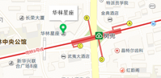

福建中科中欣智能科技有限公司是中科院海西研究院的重点孵化企业之一。公司顺应时代发展的技术潮流，基于中科院海西研究院虚拟制造与仿真技术中心的最新科研成果，努力在人工智能、大数据分析领域为各行业提供最专业的解决方案和最先进的信息化产品。
中科中欣具有强大的技术团队和专业、成熟的业务团队。我们以“客户的需求，就是我们努力的目标！”为准则，一步一个脚印，用心将每个客户的项目都打造成口碑工程。
因公司业务发展的需要，我们期待更多有共同理想的有识之士加入我们，您将有机会接触最新最前沿的技术，也有机会直接成为我们的股东！地址：福建省福州市鼓楼区华林路166号华林星座
电话：0591-83765971
手机：130-5575-1666
邮编：350000
